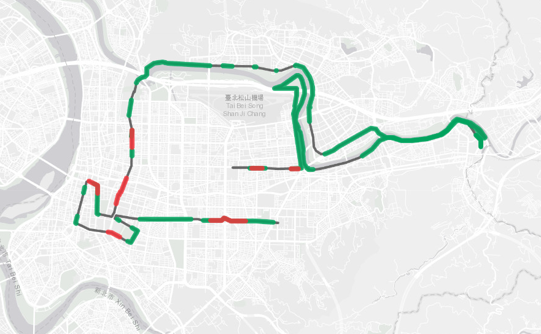
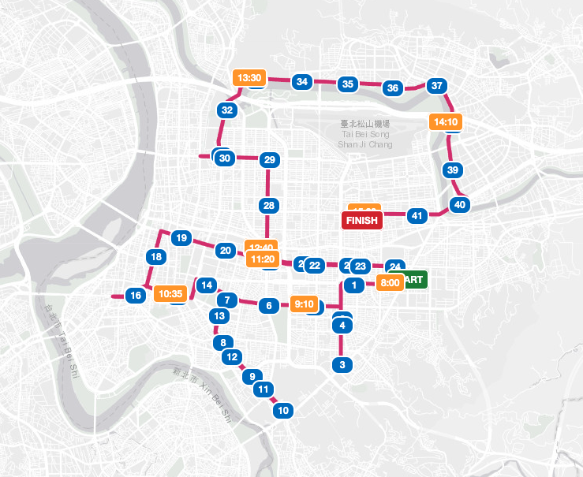
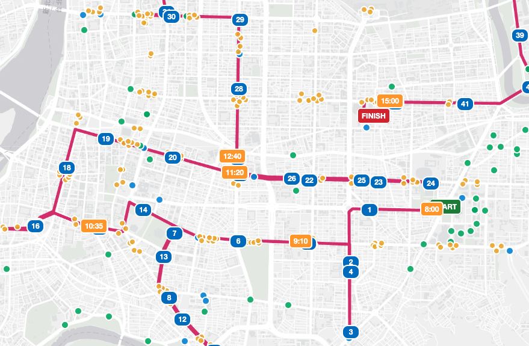
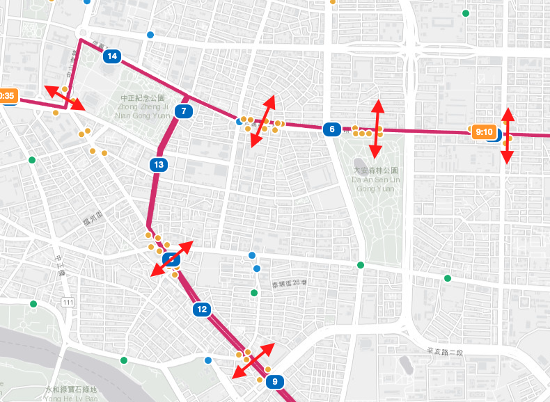

本報告為本人欲參加台北市長候選人沈伯洋舉辦「市政debug松」之選題，未經著作權人同意或授權，任何人不得擅自重製、轉載、散布或刊登。
台北馬拉松舉辦多年，在活動過程每一年都會發生影響到人行、車行的穿越事件，以台北市仍有許多人行穿越替代方案（捷運出入口、人行天橋、人行地下道）以及車行替代方案（高架道路、車行地下道），應有優化之空間。本專案先以台北開放資料，列出目前台北市人行穿越、車行穿越、緊急機構（醫院、消防隊）及警察局的分布，並且確認在影響最小的範圍提供新路線的建議，並包含了每段時間的交管與關門時間（參考東京馬拉松的關門時間）。希望本報告為一起起頭，在未來沈伯洋入主市府後，可以尋求各部會進行更詳細的分析，並真的能改變台北馬拉松，讓這場活動成為台灣跑者和台北市民的驕傲。
現行路線的主要問題是市民穿越問題與市民應援問題；而「車輛繞行」與「緊急設施保留車道」這兩點是可以透過局處規劃克服的。為了修改成優化路線，我們參考台北市現有的人行穿越設施（人行地下道、天橋、捷運出入口），將路跑活動對市民的衝擊降到最低；並透過關門時間的控制，將賽道一一開放還給市民，降低封路對城市生活的影響。
路跑時間調整：原先為6:30 起跑；因新路線改動為通過行人穿越點，希望可改晚到 8:00 起跑，也讓市民更能參與活動。台北緯度較東京、首爾低，若起跑太晚（8:30／9:00）溫度可能太高，故維持 8:00 為較適中的起跑時間。
緊急設施：優化路線貼近 5 個消防＋13 個醫院（現行為 3＋9），封路時需預留車道，確保救災、救護不受影響。
市民應援：新路線大部份位於台北市精華區、經過 15 個捷運站且途經多個商圈，預期更多市民可到現場應援。
預估完賽：依時間點換算，全程約 10 min/km，預估完賽約 15:00（約 7 小時）。
本分析以台北市開放資料為主，並參考台北馬拉松現行路線（GPX）：
分析方法：以沿線 100m／250m／500m 半徑統計人行穿越設施覆蓋；以 800m 檢視車行缺口；以 250m 檢視緊急設施貼近程度；並參考東京馬拉松的關門時間架構。
現行路線為台北馬拉松多年沿用之成熟路線，行經台北市主要幹道，動線單純、交管與應援經驗成熟，跑者與工作團隊熟悉度高；惟前半段貼近市區，市民仍可沿線觀賽，具一定觀賽基礎。
現行路線的最大缺點是未提供足夠的人行穿越空間，導致對用路人的衝擊較大；因此需要把活動時間提早，但時間提早後反而降低市民參與活動、加油的意願。
現行路線量化：全長約 42.195km；沿線無人行替代穿越的路線點約 69%；車行缺口（>800m）約 5 段／6km；貼近緊急設施（<250m）3 個消防＋9 個醫院。

優化後路線分段為 27km ＋ 6km ＋ 9km（共 42km）：
前段 27km 離市中心較近，新路線大部份位於台北市精華區，經過 15 個捷運站，可讓較多市民參與應援；且這 15 個捷運站也能透過出口讓附近人行通過，透過人行穿越動線降低對居民及周邊商業的影響，前來觀賽的人潮也能帶動周邊商業消費。
中段 6km 沿松江路、民權路、中山北路，本路段僅中山北路對於人行穿越較不友善，市府或許可採接泊車型式，讓行人搭乘接泊經高速公路到達另一端（預想是民族東路、新生北路口到民族西路、承德路口）。目前接泊車安排為殿後車，在開賽前就開至現場放置，關門後將未完賽的跑者接走；這些車在關門前可先活用為被路線分隔、且無人行替代方案的接泊車。
後段 9km 與目前路線有高度重疊，從北安路經堤頂大道，經南京東路抵達台北田徑場。此段路線最大的壓力位於松山區，但人行可透過南京三民站的地下通道獲得舒緩。
優化後的路線途經台北重要景點：仁愛林蔭大道、仁愛圓環、敦南林蔭大道、大安森林公園、中正紀念公園、台大、總統府、景福門、麗正門、龍山寺、西門町、承恩門、台北車站、國父紀念館、大巨蛋、行天宮、北美館、圓山飯店、忠烈祠、小巨蛋。
由原先的環東高架及河濱，調整至北安路、堤頂大道，降低冬季東北風對跑者的影響，且總爬升與升降次數都降低，有助跑者打破個人成績。在車行影響方面，用路人可透過建國、新生高架做南北向替代道路，市民大道做為東西向替代。

以下以現行路線 vs 優化路線比較，說明對市民與用路人的實際衝擊。
因為賽道需要在第一位跑者抵達前 5 分鐘完全淨空（約為 1.5km 的距離），故路口可先行管制並視情況開放；在路口開始封閉後，因安全考量須完全封閉至最後一位跑者經過（或到達關門時間）。
以地圖上的關門點為例，市區段封路時間約 60–230 分鐘，但可透過關門時間逐步開放，實際對市民的影響相對較小；較大的衝擊集中於前 5km（無人行穿越方案），該段封路約 30–80 分鐘，需進一步探討如何降低對大安區的衝擊。
並在路口提供用路人替代道路的指引（目前路口僅放置交管訊息、無替代道路說明）；當天也希望提供資訊給客運、貨運、外送業者共同配合，降低跨越路線的配送服務。
關門時間參考東京馬拉松；國外的路跑路線也會技術性地通過人行天橋、地下鐵車站等人行替代方案。
關門時間（賽道逐步開放，降低交管衝擊）：依時間點換算，全程約 10 min/km，預估完賽約 15:00（約 7 小時）。

本路線已涵蓋台北市市區的高架道路及車行地下道，以降低車行衝擊；以 800m 為門檻檢視，現行路線車行缺口約 5 段／6km，優化路線已大幅涵蓋市區替代道路。另外賽前需將路線管制邏輯與業者同步，在路線上避免、或直接提供司機繞行方案。
優化路線大幅提高了沿線人行穿越設施的覆蓋。以台北市現有的人行穿越設施（人行地下道、天橋、捷運出入口）計算：
| 路線 | 100m 內設施 | 250m 內設施 | 500m 內設施 | 無替代穿越的路線點 |
|---|---|---|---|---|
| 現行路線 | 35 座 | 78 座 | 175 座 | 約 69% |
| 優化路線 | 140 座 | 161 座 | 200 座 | 約 39% |
透過這些設施，市民可在封路時就近穿越，大幅降低對居民與周邊商業的影響。

對緊急設施的衝擊（距路線 <250m，封路時需預留車道）：
| 路線 | 消防（距離） | 醫院（距離） |
|---|---|---|
| 現行路線 | 3 個：華山分隊 24m、城中分隊 27m、延平分隊 245m | 9 個：馬偕紀念/兒童 18m、台大兒童 26m、宏恩 37m、國泰 95m、台大醫院 107m、博仁 170m、中山 172m、培靈 199m |
| 優化路線 | 5 個：忠孝分隊 1m、城中分隊 21m、松江分隊 107m、金華分隊 185m、華山分隊 217m | 13 個：中心診所 21m、仁濟醫院 25m、國泰 61m、中山 81m、協和婦女 103m、泰安 120m、台大兒童 151m、台大醫院 155m、博仁 182m、秀傳 195m、宏恩 224m、培靈 225m、台北長庚 243m |
這些貼近的消防／醫院需在封路時預留車道，確保救災、救護不受影響。
緊急設施路段：現行路線依資料計算約有 7 段貼近緊急設施的路段（<250m），封路時需逐段確認預留車道。
（醫院緊急道路範圍：其中台大醫院、台大兒童醫院為路線影響最大的兩個醫院，但原本的路線就是經過信義、愛國東、中山南，故建議未來需要與當地警察局就每個路口的車道調配與管制做進一步的討論。）
結論：新的路線提供了足夠的人行替代道路，降低對市民的衝擊；且因為靠近捷運站，可以吸引加油的民眾前往，提升市民參與。新路線大部份位於台北市精華區且經過許多捷運站，預期更多市民可到現場應援。有望透過更多市民參與，讓台北馬拉松看齊首爾馬拉松、東京馬拉松、上海馬拉松，成為台灣的驕傲。
配套措施與後續建議：
・試跑與路網分析：賽前試跑，並與交通局進行路網模擬，確認替代道路容量。
・配送協調：賽前將管制邏輯與客運、貨運、外送業者同步，提供繞行與時段指引。
・逐路口協商：與當地警察局就每個路口的車道調配、管制與替代道路指引討論（含緊急設施預留車道）。
・關門時間逐步開放：依關門時間逐步還原賽道，降低封路對城市生活的影響。
・各部會分工：未來可尋求交通、消防、警察、觀光等部會進行更詳細的分析與實作。
國際經驗參考：頂級馬拉松的核心在賽道本身——跑者追求破 PB 的機會與城市風景；因此應優化市區路線比例（減少河濱路段，打造「高速城市賽道」）、減少直角轉彎與起伏。同時，從「交通管制」轉向「城市嘉年華」，透過沿線商圈與社群聯動、改變公關敘事（提前數月全城行銷，定調為「屬於全台北市民的驕傲」），降低交管帶來的民怨。
待解問題：
・前 5km 無人行穿越方案：封路約 30–80 分鐘，需進一步探討如何降低對大安區的衝擊。
・中段 6km 中山北路：接泊車（殿後車活用）是否可行、班次與容量待確認。
・緊急設施預留車道：5 個消防＋13 個醫院貼近路段，逐路口車道調配需與警察局協商。
・市民應援承載：精華區人潮多，需評估沿線商圈、觀賽動線與安全。
資料來源（台北市政府開放資料）：
以上資料均由台北市政府開放資料平台下載；座標系統為 TWD97（Big5 編碼），已統一轉為 WGS84（經緯度）供地圖呈現。分析方法與計算邏輯詳見「資料來源與方法」章節。